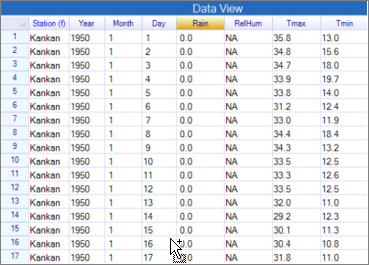
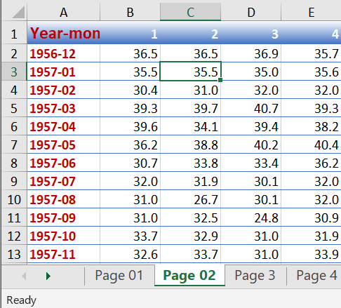
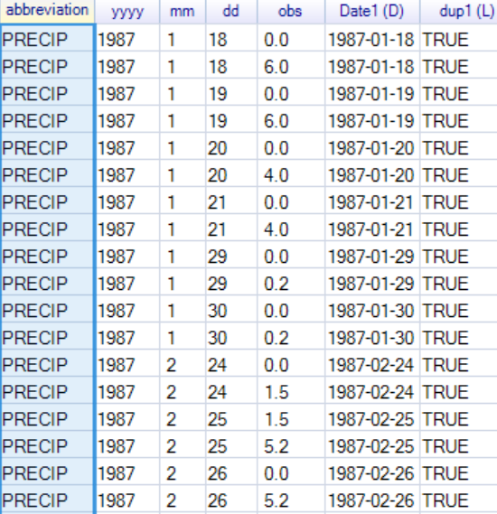

5 Getting the data into shape
5.1 Introduction
R-Instat provides a menu-driven front-end to R. It is designed to make it easy to analyse any sort of data, including climatic data. The climatic menu is designed to make many analyses of the historical climatic records even easier. Most of this guide uses the various menus and dialogues in this special climatic menu.
If your analysis is not practical using the special climatic menu it may still be possible using the general menus in R-Instat. After all many climatic analyses are done with other statistical software and they do not have a special climatic menu.
“Click and point” systems all have limitations, or they would lose the simplicity of use that is a major driving force in their production. If your analyses cannot be done using R-Instat, then one strategy would be to use R itself. The “tweaking” guide shows how R-Instat can be extended, but you may also find that using RStudio is not as hard as you feared.
This Chapter introduce the climatic menu in R-Instat and shows how climatic data is arranged for analysis.
5.2 Climatic data that is “ready”
In Chapters 2 and 3 we examined data from Moorings, Zambia and Dodoma in Tanzania that were both in the right “shape” for an immediate analysis. Here we illustrate with more examples that are “ready”. In the following sections of this chapter we show how the Climatic menu, or the general Prepare menu can help to organise data into the same shape.
If your data are already in the same shape as the examples below then much of the content from Section 4.4 can be omitted.
| Fig. 4.2a Importing a csv file | Fig. 4.2b Data for 2 stations from Guinea |
|---|---|
|  |
Go to File > Open from Library. Choose Load From Instat Collection, then Browse. Go to the Climatic directory and then Guinea. The data we require are in 2 forms, both an R file with the RDS extension and a csv file that can be read into Excel.
Use the file Guinea2.csv.
The new feature, compared to the data in Chapter 2, is that there are multiple stations. Right-click in the first Column, Fig. 4.2c, and choose the Levels/Labels dialogue. The result, in Fig 4.2d shows there are 2 stations, Kankan with about 24 thousand rows (days) and Koundara with about 16 thousand days.
| Fig. 4.2c Choose Levels/Labels | Fig. 4.2d The Levels/Labels dialogue confirms 2 stations |
|---|---|
A second data file is from Western Kenya. Go back to the File > Open From Library dialogue. Browse again to the climatic directory. Choose Kenya and then the file WesternKenya.RDS.
This opens 3 data frames in R-Instat, 2 of which are shown in Fig. 4.2e and Fig. 4.2f.
| Fig. 4.2e Name and location of each station | Fig. 4.2f Rainfall data |
|---|---|
Fig. 4.2e gives details of each station. The locations are included, which will be useful, in Chapter xxx when we draw maps. Fig. 4.2f gives the rainfall data for just over 50 stations. There are over 600 thousand rows (days) of data in total.
The third example is again from the Instat files in the Climatic directory. Choose Original Climatic Guide Datasets, which is an Excel file. R-Instat can import multiple sheets together, but here we just need the single sheet called Bulmonth, Fig. 4.2g. The data are monthly from Bulawayo in Zimbabwe from 1951.
| Fig. 4.2g Importing monthly data from Bulawayo | Fig. 4.2h Monthly data |
|---|---|
The final example is from an R package. From File > Open From Library use the Open from R option, Fig. 4.2i. This gives access to all the datasets provided with the R packages that are in R-Instat. Scroll down the From Package list to the OpenAir package. There is only one data set. Open it to give the data shown in Fig. 4.2j
| Fig. 4.2i Choosing the openair package | Fig. 4.2j Hourly data |
|---|---|
These examples show what is assumed in R-Instat to analyse the data. Data for multiple elements and from multiple sites can be in a single data frame. The multiple elements are in successive variables, i.e. they “go across”, while the multiple stations “go down”. The station name or ID is a factor column.
The dates are also needed, either in a single variable, Fig. 4.2j or in multiple variables as in Fig. 4.2h and Fig. 4.2f.
5.3 The R-Instat Climatic System
Analyses usually proceed using the following general menus:
The File menu is used to read the data
The Prepare menu is to organise the data ready for analysis
The Describe menu is for descriptive statistics, i.e. graphs and tables.
The Model menu fits and examines statistical models for the data
This is shown by the structure of the R-Instat menus shown in Fig. 4.3a.
| Fig. 4.3a The R-Instat menus | Fig. 4.3b The Climatic menu |
|---|---|
The same applies to climatic data and hence the special climatic menu is arranged in the same order, Fig. 4.3b. We now examine some of the initial menu items in turn.
| Fig. 4.3c The Climatic > File menu | Fig. 4.3d The Climatic > Tidy and Examine menu |
|---|---|
Fig. 4.3c shows the Climatic > File menu. Often the data will be loaded using the main File menu as for all the examples in Section 4.2 above. This used the File > Open from Library dialogue, but the File > Open dialogue is often used for the data files.
Some options in Fig. 4.3c, such as the importing of NetCDF files are in both menus. Others, like Climsoft are just in this menu. Climsoft is a data management system specially to manage climatic data. It was described in general in Section 1.7 and importing from Climsoft is described in Section 4.5.
Fig. 4.3d shows the Tidy and Examine menu. The first dialogue is used to “tidy” climatic data that are not yet in the shape of those in the examples shown in Section 4.2. The idea of Tidy data is useful and is described well by Wickham 2014. He gives a variety of examples, with the most complex being climatic data. The remaining items in the menu in Fig. 4.2b are all also in the main Prepare menu. They may be needed if the tidying is too tricky for the special Tidy Daily Data dialogue. They are also for further checks. For example, for daily data there should be no duplicate days in the record for the same station. Section 4.8 gives an example where this is not the case.
| Fig. 4.3e The Climatic > dates menu | Fig. 4.3f The dialogue to define a data frame as climatic |
|---|---|
Next in the preparation is to check that the file has date columns that are ready for the subsequent analyses, Fig. 4.3e. This menu is a copy of the Prepare > Column: Date menu which can be used instead.
This leads to the Define Climatic Data dialogue shown in Fig. 4.3f. The example in Fig. 4.3f is for the 2 stations in Guinee, but using the second copy of the file, called Guinee2.rds. This was prepared earlier and saved as an RDS file. The fact it is ready for analysis is saved as part of the metadata for this data frame.
The subsequent dialogues in the climatic menu all assume the data have been defined as climatic, i.e. have used the dialogue in Fig. 4.3f. That’s the “climatic system” in R-Instat.
Some readers may be concerned that they are in a rush to analyse their data and were not prepared for these initial steps. However, if your data are in “good shape” then they take only a few minutes. If not, then in many analyses these “organising of data” steps do take the time. Once this has been done the analyses can proceed quickly.
These organising steps are only done the first time you use the data. Then save the data using File > Save As > Save Data As so the climatic information is remembered. You can therefore continue later, with these data, going straight to the subsequent items in the climatic menu.
If you choose, instead, to save the data frame using File > Export > Export Dataset this has the advantage that you can view and use the data in other software. The only problem is that the special climatic information from Fig. 4.3f isn’t saved. So, when you resume, then start with the Define Climatic Data dialogue.
5.4 Tidying the Data
You can ignore this section if your data are already in the shape discussed in Section 4.2. Often this is not the case.
The first example was previously prepared for the original Instat. It is 56 years of daily data from Samaru in Northern Nigeria. Use File > Open from Library. Choose Instat data, Browse to the Climatic directory, choose Original Climatic Guide Datasets. There untick the first option and choose the sheet called Samaru56, Fig. 4.4a.
| Fig. 4.4a Open Samaru56 | Fig. 4.4b The “shape” of the Samaru56 data |
|---|---|
The data are shown in Fig. 4.4b. They are from 1928 and each year is in a separate column. All columns are of length 366, in Fig. 4.4b, and there is a special code for February 29th in non-leap years.
| Fig. 4.4c Tidying the Samaru data | Fig. 4.4d Issues in the data – no surprises |
|---|---|
| h |
Use Climatic > Tidy and Examine > Tidy Daily Data and complete the dialogue as shown in Fig. 4.4c. This will not work, because we know, from Fig. 4.4b, that there are values on invalid dates, i.e. on Feb 29 in non-leap years. The results are in Fig. 4.4d. We see that day 60 (which we knew about) is the only problem. So we can proceed.
Return to the dialogue in Fig. 4.4c, tick the option above to ignore data on invalid dates. Press Ok again.
| Fig. 4.4e Samaru data reshaped | Fig. 4.4f Using the date variable |
|---|---|
The results are in Fig. 4.4e. The tidy data now has 20454 rows (days). Also, as shown in Fig. 4.4e is that there is no longer any need for a special code for February 29th in non-leap years.
The date column has been included in the data in Fig. 4.4e. The next step is the Climatic > Dates > Use Date dialogue, completed as in Fig. 4.4f. This adds 4 new columns to the data file. We then do some housekeeping, with Right-Click and Reorder Columns to give the data as shown in Fig. 4.4g.
| Fig. 4.4g Data ready to be defined as Climatic | Fig. 4.4h Defining the data as Climatic |
|---|---|
Now use Climatic > Define Climatic Data. The dialogue fills automatically which is a good sign. The Check Unique also indicates the Date column can be a key field. Press Ok and the data are now ready for the analysis in R-Instat. They can be saved as an RDS file and/or exported as a csv file.
These steps should not have taken long. But this was a single element (rain) from a single station.
A second example is data from Garoua, Cameroon. The rainfall first, and initially in Excel, Fig. 4.4i.
| Fig. 4.4i Rainfall data from Garoua |
|---|
There are (at least 4 complications with these data, compared to the shape we would like.
There are some trace values, given as TR in the data, Fig. 4.4i
Each year is on a separate Excel sheet.
There are summary values, i.e. there are daily data and analysed data together in Fig. 4.4i.
The months “go across”.
We change the trace issue in Excel. They are rare and only up to 2005. R-Instat does not (yet) cope with trace[^16]. We choose to replace the TR by 0 in each sheet. This is easily done in Excel. The data are saved as “Garoua Daily Rainfall data 1999-July2013NOTR.xlxs”.
In R-Instat save any files you wish, then use File > Close Data File to clear your data.
Then use File > Open from Library > Instat file, Browse, Climatic, Cameroon. Open the Garoua rainfall file with the TR removed, Fig. 4.4j.
| Fig. 4.4j Importing the Garoua rainfall | Fig. 4.4k Complete the importing dialogue |
|---|---|
Click to select all the sheets, and to import only the first 31 data rows, Fig. 4.4k. Press Ok.
The 15 Excel sheets have imported into 15 R data frames, Fig. 4.4l and we check quickly that each has the 31 rows and 13 columns. Also, that all the columns are numeric. All seems alright. The next step is to append the years together.
| Fig. 4.4l The Garoua rainfall data imported | Fig. 4.4m Appending the years |
|---|---|
Use Climatic > Tidy and Examine > Append and use all the sheets, Fig. 4.4m. Press Ok.
The 15 years of data are now in a single data frame, Fig. 4.4n, and the Append dialogue has added an extra variable that contains the Year. We need the year, but it is “hidden” inside X2013.Stats”, etc. The next dialogue is in Prepare, rather than Climatic.
Use Prepare > Column: Text > Transform and complete the dialogue as shown in Fig. 4.4o
| Fig. 4.4n Data in a single data frame ** | Fig. 4.4o Extract the Year number** |
|---|---|
This adds a new column called yr, Fig. 4.4p.
| Fig. 4.4p The year is now available | Fig. 4.4q Sort the data using the year column |
|---|---|
Nearly there. Use Climatic > Tidy and Examine > Tidy Daily Data as shown in Fig. 4.4r. Earlier, in Fig. 4.4c, each year was in a column. Now each month is in its own column. Complete Fig. 4.4r as shown. As with the first run earlier (Fig. 4.4c) we first check on any errors, rather than simply ignoring them.
| ***Fig. 4.4r Tidy the daily data Climatic>Tidy and Ex | amine>Tidy Daily Data*** Fig. 4.4s An error is reported The yr column should be numeric |
|---|---|
There is an error! This can happen. Reading the message is says the “year column must be numeric”.
Looking back to Fig. 4.4p we see the year column is given as yr (c), so it is a character, or text column. So right-click and change it to numeric. Then return to the dialogue in Fig. 4.4r and press Ok again.
| Fig. 4.4t Some issues with the data | Fig. 4.4u The tidy Garoua data – at last! |
|---|---|
The results are in Fig. 4.4t. Our troubles are not over, because we learn there are 8 non-existent days with rainfall. Fortunately, most have zero and this was probably just a simple error. But the data shows there was 13.7mm on 31 September 2006, and this is a puzzle. Unfortunately, we have no way of checking this value now. So, we return to the dialogue in Fig. 4.4r and change the options to ignore these days. The result is in Fig. 4.4u.
If you now wish to proceed with the analysis of the rainfall data, then the next steps are just the same as for the Samaru data, i.e. first the Climatic > Dates > Use Date dialogue, Fig. 4.4f and then the Climatic > Define Climatic Data, Fig. 4.4h. However, we may first want to reorganise the Tmax and Tmin data, and then merge the 3 elements, before defining the climatic data. We leave this largely as an exercise but provide a few hints below.
| Fig. 4.4v Garoua Tmax data | Fig. 4.4w A problem with the data |
|---|---|
|  |
Part of the Tmax data are shown in Excel in Fig. 4.4v. There are again multiple sheets and this time each column is a day of the month. So, there are now 31 columns of data. This is the third option, when using the Climatic > Tidy and Examine > Tidy Daily Data dialogue. For the Samaru data, the years were in separate columns in Fig. 4.4c, and the months in Fig. 4.4r. This time it is the day of the month. That is quite a common layout.
On importing all the data for Tmax there is a common problem on the sheet called Page 10. The immediate indication is that some values in X25 (25th of the month) have many decimals. This is because the column name is X25 (c), so it is a character or text column and not numeric. This is because one value is given as 35.B. Perhaps it should be 35.8?
Hence note all the columns in Page 10 that are text columns. These are easily corrected in Excel. Then the tidying of the data follows similar steps to that for the rainfall.
Once the Tmax and Tmin data have been tidied, the Climatic > Tidy and Examine > Merge dialogue is used to merge the elements into a single data frame.
5.5 Transferring data from Climsoft
Climsoft is a comprehensive system for the entry and management of climatic data. The main menu is shown in Fig. 4.5a. It is designed for the entry (or transfer) of climatic data of any sort. It is also particularly useful for capturing and managing data from automatic stations.
It also includes facilities for the scanned paper records and hence facilitates the checking of the computerised data against the originals.
CLIMSOFT has its own products but is also designed to work smoothly with R-Instat. Hence R-Instat can produce products and applications for CLIMSOFT.
| Fig. 4.5a The main CLIMSOFT menu |
|---|
There are two ways to transfer data from Climsoft into R-Instat. If Climsoft is on your machine, or is available from your machine, then R-Instat can read the Climsoft database directly. Otherwise Climsoft can export tidy data that is in the form that is easily used by R-Instat. Both methods are shown here.
Use Climatic > File > Climsoft to transfer data directly from a Climsoft database, Fig. 4.5b.
| ***Fig. 4.5b Import data from Climsoft Climatic > Fil | e > Climsoft*** Fig. 4.5c Connect to the database |
|---|---|
 |
 |
In Fig. 4.5b Click on the Establish Connection button to give the screen shown in Fig. 4.5c. This is already set to the main database, so you probably do not need to change that name. We chose to add _test_, Fig. 4.5c to use the tutorial database. Then click on Enter Password and enter your Climsoft password shown at the bottom of Fig. 4.5c.
The sub-dialogue now says Connected, Fig. 4.5d and you can press Return.
| Fig. 4.5d Connected | Fig. 4.5e Transfer just the station data |
|---|---|
The main dialogue, in Fig. 4.5e now has all the station identifiers. We choose them all and press Ok.
| Fig. 4.5f Station data imported from Climsoft | Fig. 4.5g Add observation data |
|---|---|
 |
This gives the station information in Fig. 4.5f for all 122 stations in the tutorial database.
Now return to the Climsoft dialogue and tick the box for the observation data. Now the Elements are chosen, and we have selected Tmax, Tmin and rainfall in Fig. 4.5g. The Start Date and End Date are left blank so all the data is transferred.
| Fig. 4.5h The data are imported | Fig. 4.5i Add a Date column |
|---|---|
The data in R-Instat are in Fig. 4.5h. There are 6 columns, first the station, then the element given in 3 different ways, then the date and finally the data.
The date column is a date-time variable, because the data may be sub-daily. Use the Climatic > Dates > Make Date dialogue as shown in Fig. 4.5i. This adds an R date column.
Had we exported just a single element then the data would now be almost ready. As in Section 4.4, just use Climatic > Dates > Use Date and then Climatic > Define Climatic Data.
However, as we imported 3 elements (Tmax, Tmin and Rain) we have one further step, because they are currently all in a single column. They need to be in separate columns.
First use Right-click on one of the element columns, Fig. 4.5j, and convert it to a factor column.
| Fig. 4.5j Make the Element column a factor *** | Fig. 4.5k Unstack the data on the 3 elements Climatic>Tidy and Examine>Unstack*** |
|---|---|
Use Climatic > Tidy and Examine > Unstack and complete the dialogue as shown in Fig 4.5k. The data are in Fig. 4.5m and are in just the right “shape” for R-Instat.
| Fig. 4.5l The data ready for R-Instat | Fig. 4.5m Climsoft dialogue to export data |
|---|---|
The second way is for data to be exported from Climsoft that can then be imported into R-Instat.
For this option the CLIMSOFT user starts with the Products option in Fig. 4.5a. The products menu is shown in Fig 4.5m. Select Data as the Product category and Daily, as shown in Fig. 4.5m.
| Fig. 4.5n Screen to export daily data from Climsoft |
|---|
The resulting screen in Climsoft is shown in Fig. 4.5n. Complete it as shown and then press to Start Extraction, Fig. 4.5n. The resulting data are shown in Fig. 4.5o.
| Fig. 4.5o Ooops! | |
|---|---|
5.6 Satellite data
5.7 What can go wrong?
Nothing may go wrong in organising your data ready for analysis. Even so, it is often frustrating, particularly to those who are relatively inexperienced in these tasks, that the organising stage takes so long, and is also often quite difficult. What can we say except perhaps “Welcome to the real world”!
But it is annoying that these steps come first and may be more difficult and time-consuming that the subsequent analyses. These problems are general and are not limited to climatic data, but that may be small comfort as you hoped to proceed quickly and then have more time for other activities!
In addition, things may take longer, because of additional problems in the data. We look at some examples in this section. You need to become a super-critical data detective. Here we show how and why.
The first problem is very common. It was earlier shown in Fig. 4.4w and we repeat it in Fig. 4.7a. A column that should be numeric has a (c) after it, in R-Instat.
| Fig. 4.7a Numeric data imports as character (text) | Fig. 4.7b Filter in Excel to see the problem |
|---|---|
 |
This indicates it is a character, or text, column. The “cure” is usually to return to Excel and correct the error there. In Excel, once you know where to look, then one way is to set up a filter and then check on the column that R-Instat has shown has the problem. In Fig. 4.7b we filter on column Z for the 25th and find the bottom entries are not in order. A more careful look shows the bottom value to be 38.B when it possibly should have been 38.8. Other character columns on this same sheet were when a number was typed with a space and no decimal, e.g. 38 6 instead of 38.6 on the 10th of the month.
A check that is often useful is Climatic > Tidy and Examine > One Variable Summaries. This is the Examining part of this menu. To show its use, look again at the Dodoma data that was introduced in Chapter 2. So, File > Open from Library > Instat Data > Browse > Climatic Directory > Instat Guide datasets > Dodoma.
The data are shown in Fig. 4.7c. On row 120 make a deliberate mistake, i.e. double click on April 30 and change the 30 into 31. That’s not a possible day!
| Fig. 4.7c Dodoma with an error added * | Fig. 4.7d Add a date column Climatic > Dates > Make Date* |
|---|---|
| h |
Add a date column using Climatic > Dates > Make Date and complete the dialogue as shown in Fig. 4.7d.
| ***Fig 4.7e Examine the data Climatic > Tidy and Exami | ne > One Variable Summarise*** Fig. 4.7f Resulting summaries |
|---|---|
| h |
Use Climatic > Tidy and Examine > One Variable Summarise as shown in Fig. 4.7e. The results are in Fig. 4.7f.
Examine these results for each column in turn. The results are encouraging. The Year goes from 1935 to 2013. The day of the month is from 1 to 31 – which is fine.
The rainfall is from 0 (zero) to 119.8. Sometimes it is from -9999 in which case the missing values need to be recoded[^17]. Here they seem fine, and it is encouraging tht there are less than 100 missing values overall. Similarly, the limits for Tmax, Tmin and Sunh all seem reasonable.
The last column is the Date and there is one missing value – as we know, because this time we caused it! There should not be missing values in the date column. You need to do something about it.
The first step in solving the problem (assuming we don’t know it) is to filter the data, choosing just the days when Date1 == NA. To do this, right-click in any column and choose Filter, Fig, 4.7g.
| Fig. 4.7g Filter to locate the problem | Fig. 4.7h The Filter subdialogue |
|---|---|
In the Filter dialogue, choose the button to Define New Filter, and complete the sub-dialogue as shown in Fig. 4.7h. Click to Add Condition then Return and Ok.
The filtered data, Fig.
| Fig. 4.7i The filtered data |
|---|
This shows it is row 120 that is causing the problem. The correction can be made immediately, or you may like to remove the filter first and then check that there was no value on April 30 in that year.
Data from Thaba Tseka in Lesotho initially seemed easy to process. Use File > Open from Library > Instat > Browse > Climatic > Lesotho and the file Thaba_Tseka_Original.
| Fig. 4.7j The Thaba-Tseka rainfall data |
|---|
The data have been exported from a previous version of Climsoft (see Sections 1.6 and 4.5). They include a lot of station details but seem in exactly the right shape to make quick progress.
| Fig. 4.7k Add a date column | Fig. 4.7l Define Climatic Data Climatic > Define Climatic Data |
|---|---|
| h |
Define a date column from Climatic > Dates > Make Date, Fig. 4.7k, and then check, with Climatic > Tidy and Examine > One Variable Summarise, as in Fig. 4.7e. All seems fine so far.
So, the last step. Use Climatic > Define Climatic Data as in Fig. 4.7l. Complete the year, month, day fields, as the names are not recognised automatically. Also, obs is the rain column.
Finally check for uniqueness, Fig. 4.7m.
| Fig. 4.7m A problem - duplicates | Fig. 4.7n Check on the Duplicates |
|---|---|
| h |
The message in Fig. 4.7m indicates a problem. There are apparently duplicate values in the data.
As suggested in Fig. 4.7m use Climatic > Tidy and Examine > Duplicates and complete as shown in Fig. 4.7n. This produces a new logical column, that is first examined through Climatic > Tidy and Explore > One Variable Summarise, Fig. 4.7o.
| ***Fig. 4.7o Find how often there are duplicates Clima | tic > Tidy and Examine> One Variable Summarise*** Fig. 4.7p Check on the Duplicates |
|---|---|
If there were no duplicates, then this column would be FALSE all the time. We learn, from the result in Fig. 4.7p that it is TRUE on 364 rows. There are then at least 2 values for each day, so up to 182 days have duplicate values.
| ***Fig. 4.7q Filter sub-dialogue Right Click > Filter | >Define New Filter*** Fig. 4.7r The filtered data |
|---|---|
| h |  |
Use the right-click and Filter dialogue. Then Define new Filter and complete the sub-dialogue as shown in Fig. 4.7r. Then Return, and Ok to show the filtered data in Fig. 4.7s.
The possible problem becomes clearer from an examination of the data from the first 4 days. They are consecutive, from 18th to 21st January 1987. It looks as though a value might have been put on one day, and then corrected to the previous day. But both versions of the data have been exported from Climsoft, and without any indication of which version is the more recent.
Now, having been a data detective – it is probably time to go back to the source of the data. This could be to check against the paper copy, or to see whether the data could be exported without the duplicates[^18].
5.8 What’s next?
I would like to describe some of the sets of software to be used in later chapters – in addition to those so far. In particular I am looking for examples from countries (in addition to Kenya) where there could be quite a number of stations. One possibility is Rwanda, where we have permission to use 4 stations. I wonder about Germany – partly because of its potential for comparing satellite and station data. Lesotho – I could ask, and Guyana. Later possibly Haiti, but the data aren’t quite ready yet. Maybe Ghana, we currently have permission to use 2 stations.